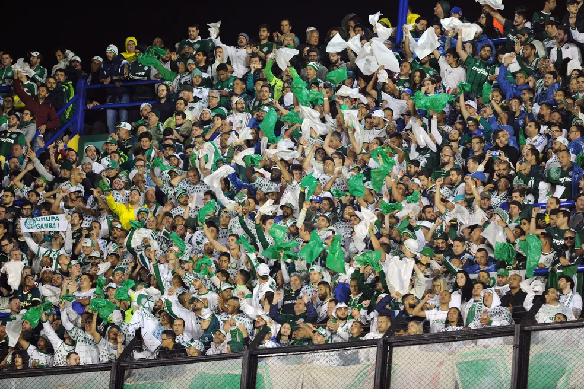

A torcida do Palmeiras esgotou em poucas horas a carga de ingressos para o setor de visitantes da Bombonera, onde o Verdão enfrenta o Boca Juniors, quinta-feira que vem (dia 28), pela partida de ida da semifinal da Conmebol Libertadores.
A comercialização deu preferência aos sócios-torcedores Avanti de acordo com a pontuação do rating. A venda abriu às 10h desta quarta-feira, no site ingressospalmeiras.com.br.
Já no início da tarde, o endereço avisou que as entradas estão indisponíveis e só voltarão a ser vendidas caso haja alguma desistência.
Depois de comprar virtualmente, o sócio-torcedor ainda terá que retirar o bilhete físico entre quinta-feira (21) e sábado (23), no portão B do Allianz Parque. Somente o titular do cadastro que comprou o ingresso poderá fazer esta troca.
Boca Juniors e Palmeiras se enfrentam pelas semifinais da Libertadores em duas quintas-feiras. Primeiro em Buenos Aires, na Bombonera, no dia 28; depois no Allianz Parque, em 5 de outubro. Os dois jogos são às 21h30 e definem quem enfrenta Fluminense ou Internacional na decisão do título.
Organizada faz campanha para ir ao jogo
Os diretores da Mancha Alviverde realizaram uma campanha nas redes sociais, em que pediram aos sócios-torcedores com rating elevado e que não vão viajar, para que comprassem ingresso e revendessem à torcida organizada, para garantir que o maior número de pessoas estivessem na Bombonera. Além dos R$ 300, a Mancha ainda vai presentear com um boné quem fizer a revenda.
O Boca, porém, avisou ao Palmeiras que há a possibilidade de se checar na chegada ao estádio o documento e ingresso para confirmar a mesma titularidade. A decisão foi comunicada como reciprocidade pelo fato de o acesso ao Allianz Parque ser por biometria facial.